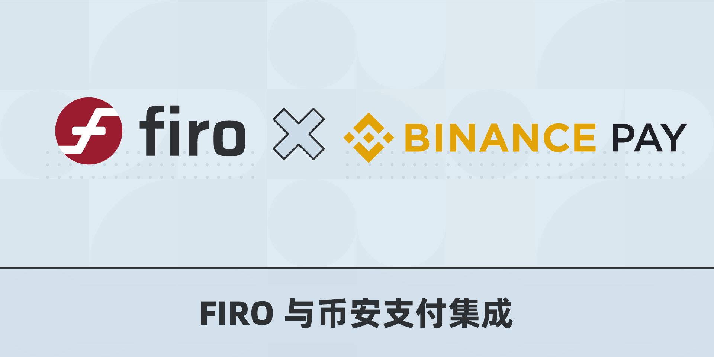

Firo 集成到币安支付
用 Firo 购物或将 Firo 发送给世界各地的朋友和家人

Firo 已集成到币安支付中，币安支付是一种无接触、无界限、安全的加密货币支付技术。
虽然我们始终建议用户将 Firo 存储在他们自己的 Firo 钱包中，如我们的 QT 或 Electron 钱包，它完全支持我们所有的隐私功能，但现实是许多用户将他们的 Firo 存储在币安上。
币安支付为现有的币安用户提供了一种简单方便的方式来即时支付、接收和发送 Firo 并与已经接受币安支付的商户（如 Travala）轻松集成。
你可以访问币安市场查看支持的商户名单。Firo 核心团队正在接触这些尚未接受 Firo 的商户！
这种集成鼓励更多的人采用 Firo 作为支付方式，并扩大我们的商户基础。
除了币安支付，希望以方便的方式接受 Firo 的商户也可以使用 NOWPayments 或 CoinPayments。我们还邀请我们的社区与使用这些支付网关的现有商户联系增加 Firo 作为支付选项！